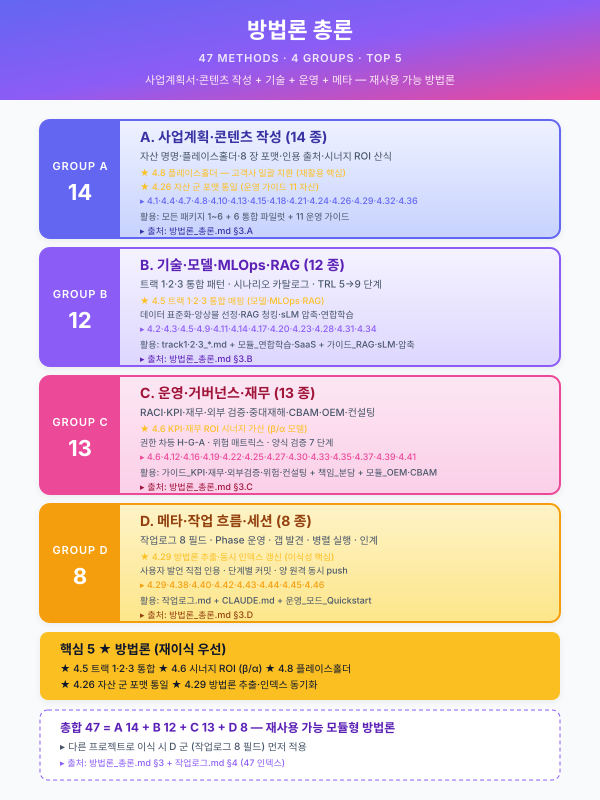

방법론 총론 — AI 협업 콘텐츠 생산·운영 패턴¤
📖 약 27 분 읽기

ℹ️ 페이지 정보 (워크스페이스 메타)
본 문서의 목적: 본 워크스페이스 (ai-docs-for-biz) 의 운영 과정에서 검증된 재사용 가능 방법론 28 항목 을 추출·정리한 자산. 본 문서는 다른 저장소·다른 도메인·다른 산출물 유형 (제안서·보고서·논문·교재 등) 으로 그대로 이식 가능하도록 자족화되어 있다.
분리 사유: 작업로그 §4 가 28 항목·212 줄 누적되어 작업로그 본체 (변동 기록) 와 방법론 (안정 자산) 이 한 파일에서 충돌. 본 분리는 방법론을 다른 프로젝트의 시작점 자산으로 활용하기 위함이다.
1. 사용 안내¤
1.1 본 문서 활용 흐름¤
- 새 프로젝트 시작 시: 본 문서를 시작점으로 복사. 도메인 무관 자산이므로 그대로 적용 가능.
- 운영 중: 새 방법론 발견 시 본 문서에 추가. 작업로그에는 1 줄 요지만 인덱스로 기록.
- 다른 프로젝트로 이식: 본 문서 + 작업로그 인덱스 + meta/claude-md.md 의 "작업 로그 유지 규약" 3 자산이 시작점 패키지.
1.2 분류 (5 군)¤
| 군 | 항목 | 핵심 |
|---|---|---|
| A. 콘텐츠 생산 패턴 | 4.1, 4.2, 4.4, 4.5, 4.13, 4.20, 4.26 | 모듈 설계·엔진 패턴·시연 효율 |
| B. 작업 분업·흐름 | 4.3, 4.11, 4.18, 4.19, 4.22 | 에이전트·메인 분담·톤 일관성 |
| C. 검증·리뷰 | 4.6, 4.7, 4.16, 4.17, 4.25 | 리뷰 템플릿·기계 vs 의미 검증·일반성 입증 |
| D. 자산 운영·관례 | 4.8, 4.9, 4.10, 4.12, 4.14, 4.15, 4.21, 4.23, 4.24, 4.28 | 플레이스홀더·확인 필요·갭 보강·책임 매트릭스 |
| E. Git·인프라 | 4.27 | 다중 원격 push 단일화 |
1.3 작업로그와의 결합 운영¤
- 작업로그 §4 = 인덱스만 (방법론 ID·제목·1 줄 요지 + 본 파일 §해당 항목 참조).
- 본 파일 §3 = 본문.
- 새 방법론 추가 시 (1) 본 파일에 신설 + (2) 작업로그 인덱스에 1 줄 추가 + (3) 해당 엔트리 본문에서 본 파일 참조.
2. 다른 프로젝트로 이식 체크리스트¤
2.1 즉시 이식 가능 항목 (도메인 무관)¤
- A. 콘텐츠 생산 패턴 7 항목 — 모듈 설계·재사용 자산 군의 일반 패턴.
- B. 작업 분업 5 항목 — 에이전트·메인 분담 표준 (Claude Code, Codex, Cursor 등 모든 AI 협업 환경).
- C. 검증·리뷰 5 항목 — 모든 워크스페이스의 리뷰·검증 패턴.
- E. Git·인프라 1 항목 — 모든 git 운영 환경.
2.2 약간 조정 필요 (도메인 어휘만 교체)¤
- D. 자산 운영·관례 10 항목 — 플레이스홀더·갭 보강 등 — 도메인 어휘 (예: 본 프로젝트의
[고객사]) 만 새 프로젝트의 어휘로 교체.
2.3 시작점 패키지 (다른 프로젝트 적용 시)¤
- 본
other/methodology.md(28 방법론 본문) meta/worklog.md의 §1 (문서 유지·갱신 규약), §2 (프로젝트 기본 정보 스냅샷 양식), §4 (방법론 인덱스 빈 상태)- meta/claude-md.md 의 "작업 로그 유지 규약" 섹션 (메타 규약)
- Memory
project_worklog_convention.md(프로필 전역 규약)
이 4 자산만 가지고 시작하면 신규 프로젝트도 동일 운영 체계 즉시 가동.
3. 방법론 본문¤
4.1 "공통 자산 + 시나리오 특화" 모듈형 콘텐츠 전략¤
- 요지: 한 산출물을 통째로 쓰지 않고, 재조합 가능한 모듈 세트를 유지.
- 언제 쓰나: 같은 유형의 문서를 반복 생산 해야 하는 경우 (제안서·보고서·사업계획서).
- 쓰지 말아야 할 때: 일회성 문서. 모듈화 오버헤드가 회수되지 않음.
- 핵심 구성: 공통 섹션 (고정) + 업종·규모별 교체 블록 + 고객사별 전면 교체 블록. 비율은 공통 60~70% / 교체 30~40% 목표.
4.2 3 축 조합 카탈로그 생성법¤
- 요지: 업종 × 기술 × 규모 세 축을 교차해 시나리오를 breadth-first 로 생성.
- 언제 쓰나: "다양한 사례를 제시" 해야 하는 카탈로그·메뉴 성격 자산.
- 주의: 깊이보다 폭 우선을 에이전트 프롬프트에 명시.
- 본 프로젝트 적용: 40 시나리오 = 철강 12 + 금속 7 + 고무 5 + 유틸 6 + MLOps 3 + LLM 4 + 안전 3.
4.3 병렬 에이전트 프롬프트 체크리스트 (5 항목)¤
- 자기 완결 — 대화 맥락 미상속 가정.
- 규칙 문서 핵심 재기술 — 자동 로드 불신.
- 도구 사용법 재확인 — 알려진 실수(예: PDF
pages파라미터) 선제. - 산출 경로·포맷·필드 명시.
- 복귀 보고 분량 제한 (본 컨텍스트 보호).
4.4 엔진 패턴 승격 (카드 폭발 방지)¤
- 요지: 여러 구체 사례를 하나씩 카드로 만드는 대신, 공통 패턴을 1차 차원으로 승격 하고 사례는 패턴의 적용 예시로 매핑.
- 본 프로젝트 적용: 40 시나리오 → 엔진 패턴 7 종 (5.2-a~g).
- 효과: 시나리오 증가 시 패턴 재지정만 하면 됨. 카드 수가 폭발하지 않음.
- 전제: 공통 패턴이 실제로 존재해야 성립. 억지 정규화는 해악.
4.5 "포인터 + 별도 파일" 패턴¤
- 요지: 본문 목차의 한 섹션이 너무 커지면 본체에는 포인터 + 개요만 남기고 상세는 별도 파일.
- 본 프로젝트 적용: 5.2 섹션 (5 줄 유지) +
track/track1-engine-cards.md(303 줄 상세). - 명명 컨벤션:
track1_{섹션번호}_{주제}_카드.md. - 효과: 본문 목차 스캔성 유지 + 상세 독립 진화.
4.6 리뷰 정리본 6 항목 템플릿¤
- 한눈에 보기 (표 + 스켈레톤).
- 결재 필요 설계 결정 (ID 부여, 예: D1~D5).
- 핫스팟 구간 (라인 번호 명시).
- 파일 간 정합성 체크.
- Red Flags (수정 후보).
- 사용자 결정 요청 (간결한 답 포맷).
- 언제 쓰나: 대형 산출물(500 L 이상)을 사용자가 리뷰해야 할 때.
- 효과: 재독 회피 + 사용자 응답 초단답화.
4.7 Phase 플래닝: "숨은 의존성 재발굴" 절차¤
- 사용자 보류 목록 + 산출물 간 선행 관계 + 시간 민감성 + 통합 테스트 성격 항목을 같이 놓고 순서 설계.
- 사용자 보류 항목만 보면 순서가 틀어짐 — 숨은 작업이 전제 조건일 수 있음.
- 본 프로젝트 적용: 보류 4 개 + 숨은 6 개 = 실제 10 개 작업 → ~F.
4.8 플레이스홀더 관례 (유사도 검출 리스크 회피)¤
[고객사]/[공정]/[수치]/[기간]등으로 고유값 치환.- 특정 고객사 전용 문구는 공통 자산과 파일 분리.
- 정부지원 사업의 유사도 검출 감점·탈락 방지.
4.9 로그 규약 이식 키트 (본 엔트리에서 추출)¤
- 3 종 세트:
- 별도 로그 파일 (
meta/worklog.md또는PROJECT_LOG.md). - 규칙 문서(
meta/claude-md.md)에 메타 규약 1 줄. - Memory 에 규약 저장 (프로필 범위 호출).
- 엔트리 8 필드 템플릿 (작업로그 §1.2 참조).
- 프로젝트 초반 도입이 최선. 역기재 비용은 엔트리 10 개 이하일 때 수용 가능.
4.10 meta/claude-md.md + Memory 이중 저장¤
- 워크스페이스 로컬 규칙 (meta/claude-md.md) + 프로필 전역 맥락 (Memory) 동시 유지.
- meta/claude-md.md 는 해당 폴더에서만, Memory 는 다른 폴더·세션에서도 호출.
- 동일 내용 중복 저장에 따른 일관성 비용은 작음 (거의 변동 없는 규칙·컨텍스트 한정).
4.11 병렬 에이전트 "파일 소유권 분할" ( 에서 검증)¤
- 요지: 두 에이전트가 동일 파일을 편집할 가능성이 있으면 작업 범위가 아니라 파일 단위 로 나눠라.
- 왜: 범위 기준 분할("A1 은 플레이스홀더 치환, A2 는 섹션 이동") 은 같은 파일을 둘이 건드릴 여지가 있음. 파일 소유권 분할("A1 = 파일 X·Y, A2 = 파일 Z") 은 기계적으로 충돌이 불가능.
- 트레이드오프: 작업량이 불균형해질 수 있음 (한 쪽이 더 많은 파일 맡음). 대부분의 경우 충돌 회피 가치가 균형 손실보다 큼.
- 적용 체크리스트: 프롬프트에 명시적으로 "DO NOT TOUCH {다른 파일 목록}" 지시.
4.12 "(확인 필요)" + 기준일 스캐폴드 (시간 민감 자산)¤
- 요지: 에이전트가 생성하는 자산 중 시간 의존성이 높은 값(지원사업 예산·공고 시기·법령 세부·외부 지표 등) 은 빈칸 "(확인 필요)" + 기준일 명시 로 남긴다. 절대 추측 기입 금지.
- 왜: 에이전트의 추측은 허위 정보가 되어 유입되면 뽑아내기 어려움. 명시적 공백은 사용자가 즉시 식별해 채울 수 있음.
- 추가: "갱신 이력" 섹션을 처음부터 구조에 넣어 두면 이후 스냅샷이 누적 관리됨.
- 적용 대상: 공고·법령·지표·가격·환율·인원·경쟁사 동향 등 시간 민감 영역 일체.
4.13 목차 vs 모듈 산출물 구분 (/C 에서 검증)¤
- 요지: 같은 "크로스커팅 콘텐츠" 라도 목차(구조) vs 모듈(삽입 블록) 의 산출물 성격을 프롬프트 수준에서 분기.
- 목차: 카드 포맷 · 플레이스홀더 중심 · 포함 내용은 블렛 요지. → 이후 에서 실문 집필 대상이 됨.
- 모듈: 삽입 지점 맵 + 실제 완성 문어체 초안 문장 (100~300자 / 블록). → 복사해서 바로 투입 가능한 완제품.
- 왜: 혼동하면 둘 다 어정쩡한 결과물 — 목차가 문장화되면 재사용 못 하고, 모듈이 플레이스홀더뿐이면 복사해도 바로 투입 불가.
- 적용 체크리스트: 프롬프트에 "산출물은 목차다" / "산출물은 복사 가능한 블록이다" 명시.
4.14 외부 저장소 푸시 시 제3자 자료 기본 제외¤
- 요지: 외부 저장소(GitHub 등) 에 push 할 때 제3자에게서 받은 자료·참고 문서는 기본 제외. 비공개 레포라도 "타인 서버" 로 이관됨을 상기.
- 어떻게:
.gitignore에 해당 파일 타입·경로 패턴 기록 + 주석으로 포함 원할 시 해제 방법 안내 (git add -f). - 왜: 자료의 재배포권은 보유권과 다름. 수취한 PDF·내부 문서·영상 등은 원작성자 허락 없이 재업로드 시 법적·신의적 리스크.
- 부가:
git add -A후git status --short로 자동 스테이지 파일(.env·.credentials·.mcp.json등 점 파일) 반드시 내용 확인 후 커밋.
4.15 선제 리스크 커버 강제 (에이전트 프롬프트 패턴)¤
- 요지: 특정 주제에서 에이전트가 놓치기 쉬운 리스크를 프롬프트에서 필수 커버 항목으로 고정.
- 본 프로젝트 적용: 연합학습 모듈에 "영업비밀·차등 프라이버시·법적 책임 3 축 모두 커버" 강제 → 표면적 "데이터 안 모으면 끝" 서술이 아니라 DP-SGD·Secure Aggregation·모델 포이즈닝·기계 비학습까지 포함된 결과. 안전 모듈에 "프라이버시·노사 합의 필수 언급" 강제 → 4 지점 중첩 배치.
- 왜: 에이전트는 기본적으로 표면 서술에 안착하는 경향. 심층 리스크는 명시적 강제 없이는 누락.
- 적용 영역: 법·규제 연관 주제, 보안·프라이버시 주제, 안전·환경 주제.
4.16 리뷰 리포트 파일 저장 + 건강도 매트릭스¤
- 요지: 대형 산출물(수백~수천 줄) 에 대한 리뷰는 메시지로 남기지 말고 별도 리뷰 파일로 저장. 파일은 파일별 4~5 축 건강도 매트릭스 (A/A-/B+ 등급) 로 시작.
- 왜 파일 저장: 메시지는 컨텍스트 회전과 함께 휘발. 리뷰 결과는 이후 수정 작업의 기준점이라 재참조 빈도가 높음.
- 왜 건강도 매트릭스: 사용자가 "어느 파일에 집중 리뷰할지" 를 한 눈에 결정 가능. 등급은 "치명도" 가 아니라 "수정 비용 대비 품질 영향" 기준.
- 본 프로젝트 적용:
meta/review-report.md(·B·C 완료 시점, 9 파일 3,187 L 대상, Red Flag 7 / Gap 6 / 결정 요청 3 선택지). - 필드 구성: (1) 리뷰 범위·방법, (2) 한 눈에 보기 매트릭스, (3) 교차 참조 검증 결과, (4) Red Flags 우선순위별, (5) Gaps, (6) 파일별 강점·약점, (7) 사용자 결정 요청.
4.17 기계 검증 + 의미 검증 하이브리드 (리뷰 효율화)¤
- 요지: 대형 산출물 교차 정합성 검증은 기계 검증 (grep/bash) + 의미 검증 (직접 읽기) 두 축의 병행이 100% 커버리지에 가장 빠르다.
- 기계 검증 대상: SCN ID 같은 식별자 참조 유효성, 섹션 번호 참조 유효성, 블록 ID 명명 규칙 일관성 — grep 이 100% 정확 + 초 단위 실행.
- 의미 검증 대상: 카드 포맷 준수, 톤 일관성, 내용 정합, 누락·중복 — 사람/AI 의 읽기가 필요.
- 실행 패턴: 한 메시지 안에 Read N 회 + Bash grep 2~3 회를 병렬 배치. 결과가 돌아온 뒤 합성.
- 본 프로젝트 적용: 5 신규 파일 Read + SCN/섹션/블록 ID grep 2 회 = 한 턴에 전 자산 검증 완료. 에이전트 dispatch 보다 빠름.
4.18 "규모 기준" 작업 분업 (에이전트 vs 메인 세션)¤
- 요지: "에이전트는 수정, 메인은 리뷰" 라는 4.17 의 거친 구분을 규모·복잡도 기준 으로 구체화. 작업 성격뿐 아니라 건당 작업량 이 분업 판단의 축.
- 판단 매트릭스:
- 대규모 수정 (파일 수십 곳 이상, 의미 판단 반복 필요) → 에이전트 소유권 분할 (4.11). 예: Phase A1/A2 플레이스홀더 파스, /C 의 목차·모듈 신설.
- 소규모 수정 (Edit 1~2 회/파일, 판단 명확) → 메인 세션 직접. 에이전트 dispatch 오버헤드가 수정 자체보다 큼. 예: 의 8 건 Red Flag 정리 (5 파일 · Edit 9 회 · 메인 세션 직접 수행).
- 리뷰·분석 → 메인 세션 (4.17).
- 창작·탐색 → 에이전트 (병렬 dispatch 4.11 또는 단독).
- 오버헤드 함수: 에이전트 dispatch 비용 = 프롬프트 설계 + 왕복 지연 + 복귀 보고 해석. Edit 1 회 직접 수행 비용 = 대상 문자열 확인 + Edit 호출. 5~10 건 미만의 소규모 수정에서는 후자가 압도적으로 빠름.
- 본 프로젝트 교훈: /B/C 는 에이전트 병렬이 옳았고, 은 메인 직접이 옳았음. 판단 축은 건수·복잡도.
4.19 단일 톤 레퍼런스 강제 (다중 에이전트 톤 일관성)¤
- 요지: 여러 에이전트가 동시에 본문을 생산할 때 워크스페이스 내 기존 본문 1 개를 "톤 표준" 으로 못 박아 모든 프롬프트에서 인용하게 한다. 별도 스타일 가이드 작성보다 저비용·고효율.
- 본 프로젝트 적용: 의 D1·D2·D3 3 에이전트 모두
track/track1-index.mdL 406~410 "사용 예시 — 철강 대기업 A사 1부 조립" 시연 섹션을 톤 레퍼런스로 인용. 워크스페이스에서 유일한 한국어 문어체 본문 샘플이라 자연스러운 표준이 됨. - 왜: 스타일 가이드를 별도로 작성하면 (1) 작성 비용, (2) 모호성 (어휘·문장 길이·명사화 정도 같은 문체 요소는 글로 설명하기 어려움), (3) 갱신 부담 발생. 실 샘플 1 개를 가리키는 것이 단순·정확·재해석 여지 없음.
- 전제 조건: 표준이 될 만한 본문 샘플이 워크스페이스에 최소 1 개 존재해야 함. 없으면 사용자와 1 단락만 직접 공동 작성하여 표준으로 박아두는 것이 시작점.
- 적용 범위: 다중 에이전트 본문·문서·기사 생산 일체. 코드의 경우는 코딩 컨벤션 파일 (e.g.,
STYLE.md) 인용으로 대체.
4.20 패턴 분포 의도적 선정 (시연 효율 극대화)¤
- 요지: 사례·예시·시나리오 등을 단일 패턴에서 깊이 가 아니라 여러 패턴에 걸치게 의도적으로 선정하면, 한 묶음의 산출물로 "전 패턴 시연" 까지 동시에 얻는다.
- 본 프로젝트 적용: Phase D3 의 시나리오 Top 5 가 5.2 엔진 패턴 6 종 중 5 종에 걸치도록 선정 (LLM-01=5.2-f / STL-08=5.2-a+f / STL-04=5.2-a+e / STL-09=5.2-d / UTL-01=5.2-e). 결과적으로 5 시나리오 상세 본문이 동시에 패턴 결합 사례 4 건의 시연 이 됨. (통합 파일럿) 에서 그대로 인용 가능.
- 반례: Top 5 를 모두 5.2-a 시나리오로 선정했으면 깊이는 깊되 패턴 다양성 시연이 누락. 통합 파일럿에서 별도 시연 콘텐츠를 추가 작성해야 했을 것.
- 선정 기준: (1) 재사용성 / 빈도 / 영향력 등 1 차 기준으로 후보군 도출, (2) 후보군 내에서 패턴 매트릭스 커버리지 가 최대가 되도록 부분집합 선정.
- 주의: 의도성을 사후 합리화로 끝내지 말고, 사전 선정 시점에 매트릭스 커버리지를 계산 해 두어야 효과가 실제 발생.
4.21 단발 패치 vs 표준화 분기 (갭 보강 효율)¤
- 요지: 자체평가에서 발견된 갭을 처리할 때 단일 사례인지 패턴인지 판단. 사례면 단발 패치, 패턴이면 표준 자산 신설 + 사례 패치를 표준의 적용 사례로 종속시킨다.
- 왜: 패턴인 갭을 단발 패치로만 처리하면 다음 사례에서 동일 갭 재발 (n 사례 × 패치 비용). 표준화는 1 회 비용 + 사례 패치 = n 사례 × ε 로 비용이 0 에 수렴.
- 본 프로젝트 적용: 갭 1 (5.2-e 미인용) + 갭 3 (SCN ID 부정합) 은 둘 다 패턴이라
guide/assembly.md1 개 표준 문서로 해결 + 파일럿 사례 패치 5 건이 표준의 §9 적용 권고로 종속됨. 다음 패키지 파일럿(1·3·4·5·6) 에서 같은 갭이 자동 차단. - 판단 체크리스트:
- 같은 종류의 갭이 다른 사례에서도 발생할 수 있는가? → 패턴, 표준화.
- 본 사례 고유의 우연한 누락인가? → 단발 패치.
- 갭의 원인이 자산 선택·인용 정책의 부재인가? → 패턴, 표준화 (정책 문서 신설).
- 갭의 원인이 자산 자체의 부재인가? → 신규 자산 신설 + 표준 인용 경로 정의.
4.22 혼합 흐름 — 에이전트 병렬 + 메인 직접 (작업 결합)¤
- 요지: 한 사이클 내 신규 자산 창작 (에이전트) 과 기존 자산 소규모 패치 (메인 직접) 가 함께 필요할 때, 에이전트 dispatch 후 결과를 받아 메인이 즉시 패치를 적용하는 혼합 흐름이 효율적.
- 왜: 모든 작업을 단일 에이전트에 맡기면 (a) 메인 컨텍스트 활용 못함, (b) 에이전트가 중간 결과를 기다리며 멈춤. 모든 작업을 메인이 하면 © 대규모 창작이 메인 컨텍스트를 점유.
- 흐름: (1) 에이전트 N 개 병렬 dispatch → (2) 결과 수신 → (3) 메인이 결과를 활용해 기존 자산 패치 → (4) 한 번의 로그 엔트리로 전체 사이클 기록.
- 본 프로젝트 적용: — G1·G2 병렬 에이전트로 신규 가이드·모델 신설 → 메인이 두 결과를 활용해 파일럿 §5.2 (5.2-e 카드 신설) · §6.1 (시너지 행) · 자체평가 갭 해소 박스 패치 → 단일 로 일괄 기록.
- 주의: 에이전트 작업이 메인 패치의 입력이라면 dispatch 가 반드시 선행. 역순이면 메인 패치가 결과를 못 보고 마무리됨.
4.23 호혜적 자산 쌍 — 효과·비용 분담 (ROI 완성)¤
- 요지: 한 도메인의 ROI 모델을 단일 자산으로 작성하면 효과 또는 비용 한쪽으로 치우치기 쉬움. 효과 모델 (α 산식) 과 비용 모델 (β 산식) 을 별도 자산으로 분담하고 결합 시 완성형 ROI 가 도출되는 호혜 구조가 효과적.
- 본 프로젝트 적용: 의
other/synergy-roi.md(효과 시너지 4 분류 + α_total) +재무_예산_산정_가이드.md(비용 시너지 + β_synergy) 가 결합되어ROI = (Σ 효과 × α_total) / (Σ 비용 × (1 - β_synergy))완성형 ROI 도출. 두 자산이 단독으로는 부분적, 결합 시 완전. - 왜: 효과·비용을 한 자산에 통합하면 (a) 자산이 비대 → 유지보수 부담, (b) 한쪽이 우선시되어 다른 쪽이 약화. 분담 시 각 자산이 자기 영역을 깊게 다룰 수 있음 + 결합 산식만 명시하면 끝.
- 적용 영역: ROI·KPI·성과 모델 일체. 효과·비용 외에도 위험·기회, 단기·장기 등 이항 분담 적용 가능.
- 결합 명시 책임: 어느 한 자산이 "결합 산식" 을 명시하고 다른 자산을 인용해야 함 (본 프로젝트는 G5 가 §7 에서 명시). 두 자산 모두 결합을 명시하지 않으면 호혜성이 무너짐.
4.24 갭 보강 사이클의 회차별 누적 (정밀화 패턴)¤
- 요지: 통합 파일럿 → 자체평가 갭 → 표준 자산 신설로 갭 해소 → 재 자체평가의 사이클을 반복하면 회차마다 (a) 자산 수 증가, (b) 미해소 갭 감소, © 표준화 비율 상승. 1 회차에 모든 갭을 다 메우려 하지 말고 회차별 누적 정밀화 가 효율적.
- 본 프로젝트 적용: = 1 회차 (8 갭 발견) / = 1 차 보강 (갭 1·2·3 해소, 5 갭 잔존) / = 2 차 보강 (갭 4·7·8 해소, 2 갭 잔존) / = 2 회차 통합 파일럿 (E2, 신규 갭 3 추가 발견 = 5 잔존). 회차별 잔여 갭은 8 → 5 → 2 → 5 로 변동 — 새 회차는 새 갭을 발견할 수 있음 을 받아들이는 것이 중요.
- 왜 회차 분리가 유리한가:
- 우선순위가 자연스럽게 드러남 (큰 갭 먼저, 작은 갭 후순위).
- 각 회차의 산출물이 다음 회차의 자체평가 입력이 됨 (재귀적 정밀화).
- 메인 컨텍스트·에이전트 작업량 분산.
- 종료 조건: 잔여 갭이 (a) 작업량 작고 우선순위 낮거나 (b) 외부 정보 (사용자 인터뷰·시장 단가) 없이는 해결 불가능한 영역만 남으면 종료.
- 갭 성격의 진화 — 1 회차 갭은 워크스페이스 내부 정합 갭, 회차 누적은 워크스페이스가 다루지 못한 새 영역 갭 으로 전환. 본 프로젝트 ·19 가 내부 정합, 의 E2 가 새 영역 발견 (DWG 형상 / SaaS 보안 / 6 개월 양식).
4.25 두 극단 검증 — 한 사례가 아닌 두 대척점 사례 (자산 일반성 입증)¤
- 요지: 자산의 일반성·재사용성을 검증할 때 한 사례 만으로는 "그 사례가 자산에 잘 맞은 것" 인지 알 수 없음. 두 대척점 사례 의 동시 통과가 일반성의 진짜 검증.
- 본 프로젝트 적용: (패키지 2 — 철강·18 개월·풀 인프라) + (패키지 5 — 정밀가공·6 개월·SaaS 경량) 의 두 대척점이 모두 일관성 점수 4.7~5.0 으로 통과 → 워크스페이스 자산이 도메인 독립적 임을 입증. 한쪽만 통과했다면 "그 도메인용 자산" 인지 의심 가능.
- 두 극단 선정 기준: (a) 도메인 (철강 vs 정밀가공) (b) 기간 (18 개월 vs 6 개월) © 인프라 (풀 vs 경량) (d) 규모 (중견 vs 중소) — 가능한 많은 축에서 대척점.
- 부수 효과: 자체 평가에서 "가장 일반성 강한 자산" 과 "가장 도메인 특화 자산" 을 구분 가능. 일반성 자산은 그대로 유지, 도메인 특화 자산은 분기 확장 (예: 5.2-c 비전이 정밀가공 비전·고무 비전·철강 비전으로 분기) 의 원칙 도출.
- 적용 영역: 모든 표준 자산·플랫폼·라이브러리·프레임워크의 일반성 검증. 단일 사례 검증은 가짜 일반성. 두 대척점 검증은 진짜 일반성.
4.26 자산 군의 포맷 통일 — 새 자산 추가 시 첫 자산의 포맷 따르기¤
- 요지: 한 워크스페이스 안에 동종 자산을 여러 개 추가할 때 (예: 모듈 5 종, 엔진 카드 7 종, 시나리오 상세 N 종), 첫 자산이 정의한 포맷을 후속 자산이 그대로 따른다. 새 자산이 더 좋은 포맷을 갖더라도 일관성을 위해 동질화.
- 본 프로젝트 적용: 모듈 군 — CBAM (#C1) → 중대재해 (#C2) → 연합학습 (#C3) → SaaS 보안 () → OEM 공급망 () 5 종 모두 동일 7 절 구조. 엔진 카드 군 — 5.2-a~g 7 종 모두 동일 8 항목 구조. 운영 가이드 군 — 시너지·압축·재무·sLM·KPI 5 종.
- 왜: 사용자가 N 자산 군을 사용할 때 매 자산마다 새 포맷 학습은 비용. 일관 포맷 = 매트릭스 표·검색·인용·재구성 모두 N 자산 일괄 적용 가능.
- 첫 자산이 잘못 만들어진 경우의 트레이드오프: (a) 기존 자산 모두 재포맷 (큰 비용) vs (b) 첫 자산 따라 일관성 유지 (개선 기회 상실). 일반적으로 (b) 가 우선이며, 첫 자산이 명백히 결함이면 일괄 리팩토링.
- 포맷 변경 시 규칙: (1) 모든 N 자산을 동시에 변경, (2) 변경 사유·새 포맷·이주 결과를 작업로그 1 개 엔트리로 명시, (3) 새 자산은 변경 후 포맷 따름.
- 적용 영역: 자산 군 일체 — 카드 / 모듈 / 시나리오 / 가이드 / 양식. 단일 자산은 본 방법론 무관.
4.27 다중 원격 push 단일화 (git pushurl --add 패턴)¤
- 요지: 다중 원격 (예: 외부 GitHub + 사내 사내 git) 에 동시 push 가 필요할 때, 하나의 remote 에 push URL 을 다중 등록 하는 git 표준 기능으로 단일 명령 push 가능. alias·hook·CI 도입 없이 git 기본만 활용.
- 명령:
첫 등록 시 기존 fetch URL 이 push 에서 제외 되므로 첫 URL 도 반드시 명시 추가. 이후
git remote set-url --add --push origin <첫 push URL> git remote set-url --add --push origin <두 번째 push URL>git push origin <branch>1 회로 양 원격 동기화. - 본 프로젝트 적용: — origin (GitHub) + yona (사내 Yona) 가 별도 remote 였으나 매 커밋 후 push 2 회 누적. origin 의 push URL 에 두 URL 모두 등록 후 yona remote 는 fetch 용 유지.
- 장점: 운영 효율 + git 표준 기능 + 로컬 한정 (커밋 외부, 다른 클론 영향 없음).
- 한계: 순차 push 라 첫 URL 실패 시 두 번째 push 가 부분 실패 가능. 안전 운영을 위해 별도 remote (yona) 도 유지하면 fallback 가능.
- 적용 영역: GitHub + GitLab 미러, 외부 + 사내 git 동시 운영, 내부 + 백업 git 등.
4.28 책임 매트릭스의 차원별 분리 (3 매트릭스 패턴)¤
- 요지: 단일 RACI 매트릭스로 모든 책임 영역을 커버하려 하면 의사결정 책임·정보 노출 권한 등이 RACI 의 4 셀 (R/A/C/I) 로 표현되지 않아 모호 셀이 발생. 차원별 분리 — 활동 책임 (RACI) + 의사결정 책임 (Final/Veto/Audit/Information) + 권한 차등 (노출/마스킹/차단) 의 3 매트릭스로 분리 하면 각 차원이 명확히 결정.
- 본 프로젝트 적용: 의
other/raci-matrix.md— RACI (활동 8 × 역할 7) + AI 의사결정 책임 (결정 7 × 역할 6) + 권한 단계별 차등 (사용자 7 × 정보 5). 기존 모듈 (OEM·중대재해·SaaS) 의 책임 매트릭스 항목이 본 자산의 3 매트릭스로 정합 매핑. - 분리 기준:
- 활동 책임 (RACI): 누가 활동을 수행·승인·자문·통보 받는가
- 의사결정 책임: 누가 최종 결정·거부권·감사권·정보권을 가지는가 (특히 AI 출력에 대한 책임)
- 정보 노출 권한: 누구에게 어느 등급의 정보가 노출되는가 (보안·민감도 차원)
- 장점: 각 차원이 다른 셀 어휘 (R/A/C/I vs Final/Veto/Audit/Info vs 노출/마스킹/차단) 로 명확. 사고 시 책임 귀속·감사·법적 정합 모두 별도 차원으로 분리 가능.
- 적용 영역: AI 도입 사업·OEM 협력·민감 정보 처리·대규모 조직의 책임 분담 일체.
4.29 방법론 자산 분리 — 인덱스 + 본문 분리 운영¤
- 요지: 작업로그가 누적되면 안정 자산 (방법론) 과 변동 기록 (엔트리) 이 한 파일에서 충돌. 방법론 본문을 별도 자산 (예:
other/methodology.md) 으로 분리 하고 작업로그에는 인덱스 표 (방법론 ID·제목·1 줄 요지) 만 유지. 작업로그 가독성 + 방법론 이식성 동시 확보. - 분리 시점: 방법론 항목이 20+ 누적되거나 방법론 §4 본문이 200 줄 초과 시.
- 분리 자산 구성:
- §1 사용 안내 (활용 흐름·분류 매트릭스·작업로그 결합 운영)
- §2 다른 프로젝트로 이식 체크리스트
- §3 방법론 본문 (작업로그 §4 그대로 복사)
- §4 신규 방법론 추가 절차
- §5 다른 프로젝트 적용 사례 (확장 영역)
- 본 프로젝트 적용: — 작업로그 §4 (28 항목·212 줄) →
other/methodology.md(270 줄) 신설 + 작업로그 §4 인덱스 표 (44 줄) 로 축소. - 신규 방법론 추가 절차: (1)
other/methodology.md§3 에 본문 추가, (2) 작업로그 §4 인덱스에 1 줄 요지 추가, (3) 해당 엔트리 본문에 본 파일 §해당 항목 참조. - 장점: (a) 작업로그 가독성 회복 (1481 → 1320 줄), (b) 다른 프로젝트로 이식 시
other/methodology.md단독 가져가면 충분, © 분류·이식 가이드를 본문에 결합 가능. - 적용 영역: 방법론·패턴·체크리스트가 누적되는 모든 프로젝트 운영 체계.
4.30 에이전트 출력 한도 vs 메인 직접 — 통합 파일럿의 분량 한계¤
- 요지: 4.18 (규모 기준 작업 분업) 의 중요 보강. 에이전트 출력 토큰은 한도 (대략 64K) 가 있어 800 줄 이상 통합 파일럿 (마크다운 본문 + 자체평가 + cross-reference) 작성 시 한도 초과 위험. 메인 직접 작성 으로 전환하면 한도 80K+ 안전 구간. 단 200~300 줄 신규 자산 은 에이전트가 안전.
- 분기 기준:
- 메인 직접 — 통합 파일럿 (800~1500 줄), 자체평가 + 5~10 자산 cross-reference + 5~7 도메인 비교 표 동시 출력.
- 에이전트 안전 구간 — 200~300 줄 신규 자산 (시나리오 상세·운영 가이드·모듈), 단발 패치 (Edit 5~10 회), 표준화 자산 신설.
- 혼합 (4.22) — 신규 자산 (에이전트) + 기존 자산 소규모 패치 (메인) 동일 사이클.
- 본 프로젝트 적용:
- #29 (): 에이전트 1 차 시도 실패 (tool_uses 26 회 + 0 줄 출력) → 메인 직접 전환 (Write 1 회 + 짧은 응답) 으로 476 줄 안전 출력.
- #30 ( 후속): 신규 3 자산 (160·221·221 줄) 모두 에이전트 안전 구간 → G15·G16·G17 3 병렬 동시 dispatch 성공 (충돌 0).
- 메인 직접 시 응답 토큰 절약: Write 도구로 큰 콘텐츠 1 회 출력 + 메인 자체 응답은 짧게 (3~5 줄 안내). 메인 응답 자체가 길면 다음 턴 토큰 부담.
- 적용 영역: 통합 산출물 (사업계획서·논문·기술서) 작성 자동화 — 분량 800 줄 임계로 에이전트·메인 분기.
4.31 brainstorming + 작업로그 통합 패턴 (워크스페이스 관례 우선)¤
- 요지: brainstorming 스킬의 표준 흐름 (설계 문서 → 자체 검토 → 사용자 검토 → writing-plans) 은 워크스페이스에 별도 작업로그 규약이 있는 경우 기능 중복. 워크스페이스 작업로그 규약이 brainstorming 스킬의 설계 문서 + 검토 게이트 역할을 이미 수행하고 있다면, 두 흐름을 1 개로 통합하여 1~2 턴 절약.
- 언제 적용 가능: (a) 워크스페이스에 작업로그 규약이 명시되어 있고 (b) 작업로그 엔트리가 8 필드 이상의 구조 (맥락·요청·수행·근거·결정·산출물·배운점·다음 단계) 를 가지며 © 본 사이클의 산출물이 단일 자산이 아닌 다 자산 통합 (Cycle N 파일럿 등) 일 때.
- 통합 방식: brainstorming 의 §1·§2·§3 (설계 섹션) 검토 게이트는 그대로 유지. §4 (자체평가 + 검토 게이트) 와 별도 설계 문서 저장 단계는 생략, 결과를 작업로그 #N 엔트리의 "산출물 (계획)" + "다음 단계" 필드에 통합. writing-plans 호출도 작업로그 엔트리의 "Cycle 분할 청사진" 으로 흡수.
- 본 프로젝트 적용: #31 ( brainstorming + Cycle 1) 의 1 차 시연. 4 턴 brainstorming clarifying questions + 3 섹션 설계 검토 게이트 후 §4 생략 + 설계 문서 작업로그 통합 (옵션 A) 선택 → 1~2 턴 절약.
- 적용 영역: 한국어 사업계획서·논문·기술서 등 작업로그 규약이 운영되는 모든 워크스페이스. brainstorming 스킬 호출 시 옵션 A (생략·통합) vs 옵션 B (정상 진행) 의 분기 기준이 필요.
4.32 다년 R&D 단계+연차 이중 구조 (분기 5 차원)¤
- 요지: 다년 R&D 양식은 단계 (기술 성숙도 분기) + 연차 (시간 분기) 의 두 차원을 동시 강제하며, 이는 단년 R&D 양식의 단일 차원 (연차) 과 본질적으로 다르다. 단계 = 1단계 (역량분석·컨설팅·TRL 4) + 2단계 1년차 (데이터 수집·시작품·TRL 5~6) + 2단계 2년차 (AI 활용 시스템·실증·TRL 7~8) 의 표준 분기. 5 차원 (목표·예산·참여·위탁·TRL) 을 단계별 분리 강제.
- 단계 가로지름 부정합: 1단계 본문에 2단계 비목 인용 등 단계 가로지름은 양식 부정합 → 본문 작성 시 5 차원 차원별 단계 분리 일관 적용 강제.
- 단계별 표준 패턴: (1단계) 외부 컨설팅 위탁이 본체 (정부지원 ~99% 가 컨설팅비) — 4.31 의 컨설팅 99% 패턴. (2단계 1년차) 인프라 구축 + 위탁 1 종. (2단계 2년차) AI 모델 개발 + 다 위탁 분산 (6 종 동시 위탁 등).
- 본 프로젝트 적용: 양식검증_DX촉진_R&D.md §5 단계별 강제 분리 + pkg/pkg1-steel-enterprise.md §5·§6 본문 시연. 단계 가로지름 부정합 0 (자체평가 §8.6 일관성 5/5).
- 적용 영역: 전사적 DX 촉진 R&D · 글로벌 협력 R&D · 산학협력 R&D · 우수기업 R&D 등 모든 다년 R&D 양식 작성. 양식 검증 군 자산 신설 시 단계+연차 이중 구조 명시 의무.
4.33 filled vs blank 양식 분리 기준 (양식 PDF 활용 정책)¤
- 요지: 양식 PDF 가 빈 양식 (template) 이 아닌 filled 사례 (다른 [고객사] 의 협약용 R&D 계획서) 일 때, 양식 추출 (목차·§·표·필수 항목·5 조항 패턴 등 구조) 만 reference 로 사용 + 본문·데이터 verbatim 차용은 금지. meta/claude-md.md 의 "treat as source material for patterns and phrasing, not text to reproduce" 규약 준수.
- 분리 처리 절차: (1) PDF 통독 시 양식 메타 (페이지·§ 구조·표·필수 항목) 와 filled 데이터 (특정 [고객사] 의 매출·인적사항·KPI 실측치 등) 분리 식별. (2) 양식 검증 자산 (예:
양식검증_X.md) 에는 양식 메타만 정리, filled 데이터는 "양식 사례 데이터 발췌·요약" 으로 인용 출처 명시. (3) 통합 파일럿 (예: 사업계획서_패키지N_X.md) 작성 시 [고객사] 가설을 새로 정의하고 [수치]·[기간] 등 플레이스홀더로 본문 작성. - 본 프로젝트 적용: 패키지 5 (#27 정밀가공 SaaS) + 패키지 3 (#29 특수강관 9개월) + 패키지 1 (#31·32 대기업 철강 다년) 의 3 회 양식 검증 모두 동일 패턴. 패키지 1 은 PDF 가 동국산업 (filled) 이고 우리 가설이 동국제강 (별도) 인 가장 명확한 분리 사례.
- 적용 영역: 정부지원사업 양식 PDF 가 협약용 filled 사례로 제공되는 모든 경우. 빈 양식 template 이 별도 제공되지 않을 때 본 정책의 활용도 최대.
4.34 한국어 정보 밀도 압축 효과 (청사진 분량 vs 실제 분량)¤
- 요지: 영어 기준 분량 청사진을 한국어 산출물에 그대로 적용하면 실제 분량이 약 45~55% 압축 된다. 한국어 문어체 (사업계획서·논문) 는 (a) 조사·어미가 응축적이고 (b) 표·다이어그램 활용이 본문 내 직접 가능하며 © citation-driven 작성이 본문 압축을 가속하기 때문.
- 적용 산식: 청사진 분량 × 0.5 ≈ 실제 분량 (한국어 문어체 + 표·다이어그램 결합 + citation-driven). 단, 자체평가·논거 본문 등 자유 서술이 많은 섹션은 압축 효과 약 (0.7 정도).
- 본 프로젝트 적용: 패키지 1 통합 파일럿 청사진 1710~1920 줄 → 실제 773 줄 (약 45% 압축). 양식검증 청사진 200~300 줄 → 실제 282 줄 (압축 효과 약 함, citation·표 비중 높아 자유 서술 적음). 평균 압축률 약 50%.
- 적용 영역: 분량 청사진 산정이 필요한 모든 한국어 통합 산출물. brainstorming 의 분량 추정 + 작업 분할 (4.18·4.30) 시 청사진 × 0.5 보정 적용.
4. 신규 방법론 추가 절차¤
본 워크스페이스 또는 다른 프로젝트에서 새 방법론 발견 시:
- 본 파일 §3 에 다음 번호로 추가 (4.29, 4.30, ...).
- 항목 구조: 요지 + (왜·언제·어떻게·본 프로젝트 적용·적용 영역) 5 필드 권장.
- 작업로그 §4 인덱스에 1 줄 요지 추가.
- 해당 엔트리 본문에서 본 파일 §해당 항목 참조.
- 분류 (§1.2) 5 군 중 적합한 군에 매핑. 새 군이 필요하면 신설.
5. 다른 프로젝트 적용 사례 (확장 영역)¤
본 문서를 다른 프로젝트에 이식한 사례를 누적 기록하는 영역. 도메인·산출물 유형·적용 결과를 1 단락씩 기록하여 본 방법론의 실효 검증 데이터로 활용.
(향후 적용 사례 누적 예정)
📌 이 페이지 정보 (개발자용)
- 원본 파일:
방법론_총론.md - 자산 군: 📚 참고 자산
- slug 경로:
other/methodology.md - 워크스페이스 정책: 원본 .md 수정 0 — hooks 로만 시각 변환
- 자산 자족성 정상화: Phase E7 완료 (잔여 외부 갭 4)